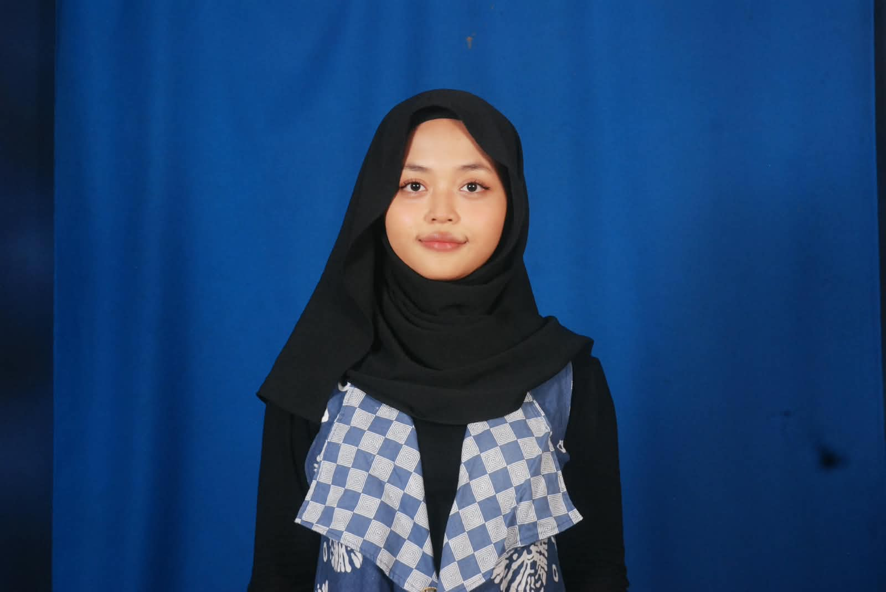

Tentang saya

Saya Diah Putri Pertiwi, mahasiswi Program Studi Informatika Universitas Islam Indonesia angkatan 2025 yang sedang menempuh semester 3. Di tengah kesibukan mempelajari dunia teknologi dan logika pemrograman, saya gemar meluangkan waktu untuk membaca buku serta mengeksplorasi dunia estetika dan mode.
| Kegiatan | Peran | Waktu |
|---|---|---|
| Pemrograman Web berbasis HTML | Mahasiswa | |
| Pemrograman Web berbasis CSS | Mahasiswa | |
| Proyek Scholampia | Mahasiswa |
Karya saya
- SiBook App (2025) — Aplikasi JavaFX untuk mengelola data antrean pelanggan dan pemesanan sewa PlayStation menggunakan arsitektur Model-View-Controller (MVC).
- Portofolio Web Aksesibel (2026) — Praktikum PABW mengenai halaman profil personal berbasis HTML semantik, CSS Design Tokens dua lapis, dan penyesuaian tema gelap tanpa JavaScript.
- Konsep Desain & Perencanaan Tata Ruang (2025) — Eksperimen awal menggunakan aplikasi perancangan interior dan tata letak ruang untuk menciptakan suasana kamar atau ruang belajar yang nyaman.
Hubungi saya
Isi formulir berikut. Semua kolom bertanda wajib harus diisi.
Tanya Jawab
Mengapa menyukai integrasi Desain & Teknologi?
Karena perpaduan logika pemrograman dan estetika desain antarmuka menciptakan pengalaman pengguna yang tidak hanya fungsional tetapi juga nyaman dipandang.
Perangkat lunak apa yang sering digunakan?
VS Code, Chrome DevTools, Figma untuk desain antarmuka, serta tools perancangan tata ruang 3D.
Perjalanan Akademik
- — Lulus dari Sekolah Menengah Pertama (SMP).
- — Lulus dari Sekolah Menengah Atas (SMA) mengambil jurusan Ilmu Pengetahuan Alam (IPA) murni.
- — Mulai menempuh pendidikan Sarjana Informatika di Universitas Islam Indonesia (saat ini masih berstatus sebagai mahasiswa aktif).
Keterampilan & Minat
- Pengembangan Web & Perangkat Lunak
- Pembuatan website menggunakan HTML dan arsitektur CSS, penerapan logika pemrograman dengan Python dan Java, serta perancangan antarmuka visual aplikasi melalui JavaFX Scene Builder.
- Perancangan Interior & Estetika
- Eksplorasi tata ruang, pemilihan skema warna, dan tata letak fungsional.
- Literasi & Imajinasi Kreatif
- Hobi membaca buku membantu saya memperkaya wawasan, memperluas imajinasi, serta menumbuhkan empati yang sangat berguna untuk memahami sudut pandang pengguna saat mendesain antarmuka.